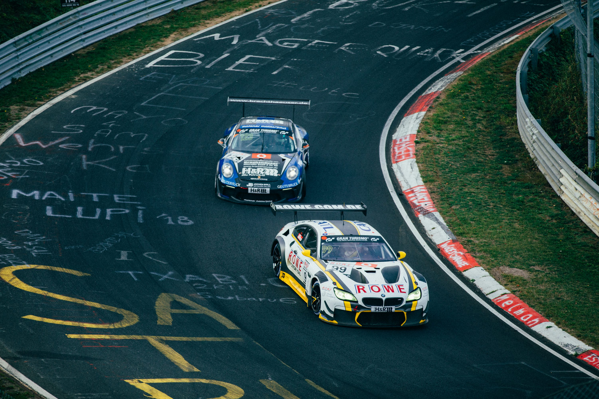
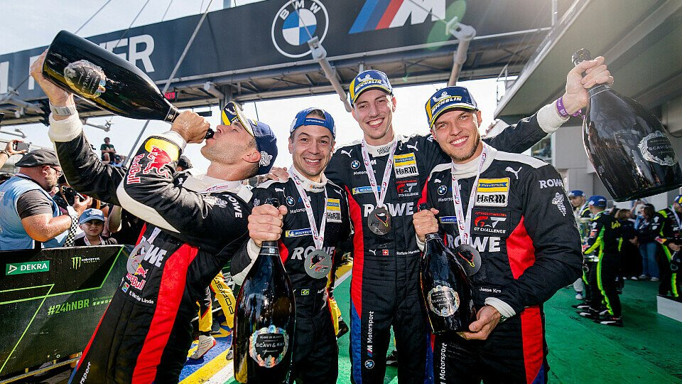
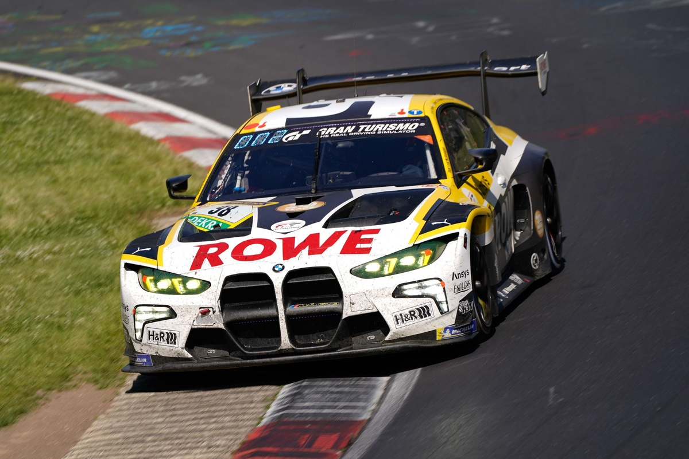
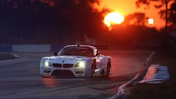
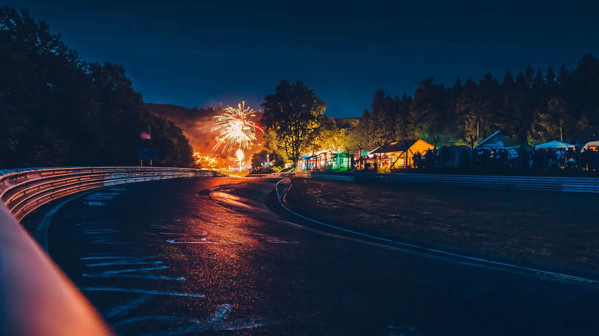
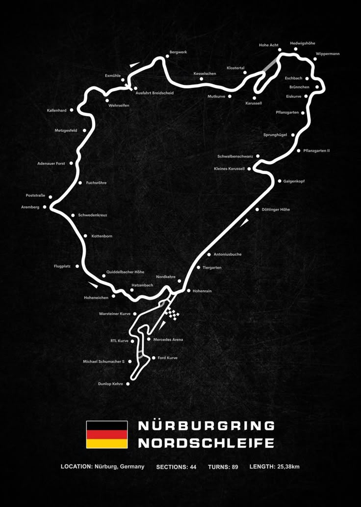

informacion
Conoce al ganador de las 24h de Nurburdirng y los cambios climaticos que soportaron .
El equipo ROWE Racing

El equipo ganador, ROWE Racing, estuvo compuesto por los pilotos Augusto Farfus, Jesse Krohn, Raffaele Marciello y Kelvin van der Linde. Es importante destacar que el BMW M4 GT3 Evo demostró ser un coche ganador, logrando la victoria en la categoría general y también en la clase SP3T con el equipo FK Performance Motorsport.
Carroceria que gano las 24h de Nurburdirng

Sí, el BMW M4 GT3 EVO, conducido por ROWE Racing, ganó las 24 Horas de Nürburgring 2025. Los pilotos Kelvin van der Linde, Augusto Farfus, Jesse Krohn y Raffaele Marciello lograron la victoria. Esta victoria marca la 21ª victoria general de BMW en la carrera y la primera desde 2020, según BMW M. El equipo ROWE Racing superó una posición de salida en el puesto 17 y una bandera roja para reclamar la victoria.
Le mans en la tarde

El atardecer en las 24 Horas de Nürburgring es un espectáculo imponente. El sol se oculta tras los densos bosques del Nordschleife, proyectando sombras largas sobre el asfalto ondulado y estrecho del circuito. La luz dorada resalta la belleza salvaje del “Infierno Verde”, mientras los autos rugen a toda velocidad entre árboles y curvas ciegas.Es un momento de transición y tensión: la pista se vuelve más desafiante con cada minuto que pasa, y la atmósfera se llena de emoción, belleza y respeto por este circuito legendario.
Le mans de noche

El anochecer en las 24 Horas de Nürburgring marca el inicio del desafío más temido del “Infierno Verde”. La luz desaparece entre los árboles del Nordschleife, sumiendo la pista en penumbra.Los faros cortan la oscuridad, los sonidos del bosque se mezclan con el estruendo de los motores, y cada curva se vuelve más incierta.Es un momento de máxima concentración, donde la noche transforma la carrera en una batalla contra la fatiga, la niebla, y la propia naturaleza del circuito.
Pista actual

La pista de las 24 Horas de Nürburgring combina dos trazados: el Nordschleife (la “antigua” y famosa sección de 20,8 km) y parte del circuito Grand Prix, formando un recorrido total de más de 25 km. Es una de las pistas más largas y exigentes del mundo, con más de 150 curvas, fuertes cambios de elevación y zonas de alta velocidad. Rodeada de bosques densos y un clima muy variable, la pista puede tener lluvia en un sector y sol en otro. Conocida como el "Infierno Verde", es un verdadero reto para cualquier piloto, ideal para una carrera de resistencia como esta.